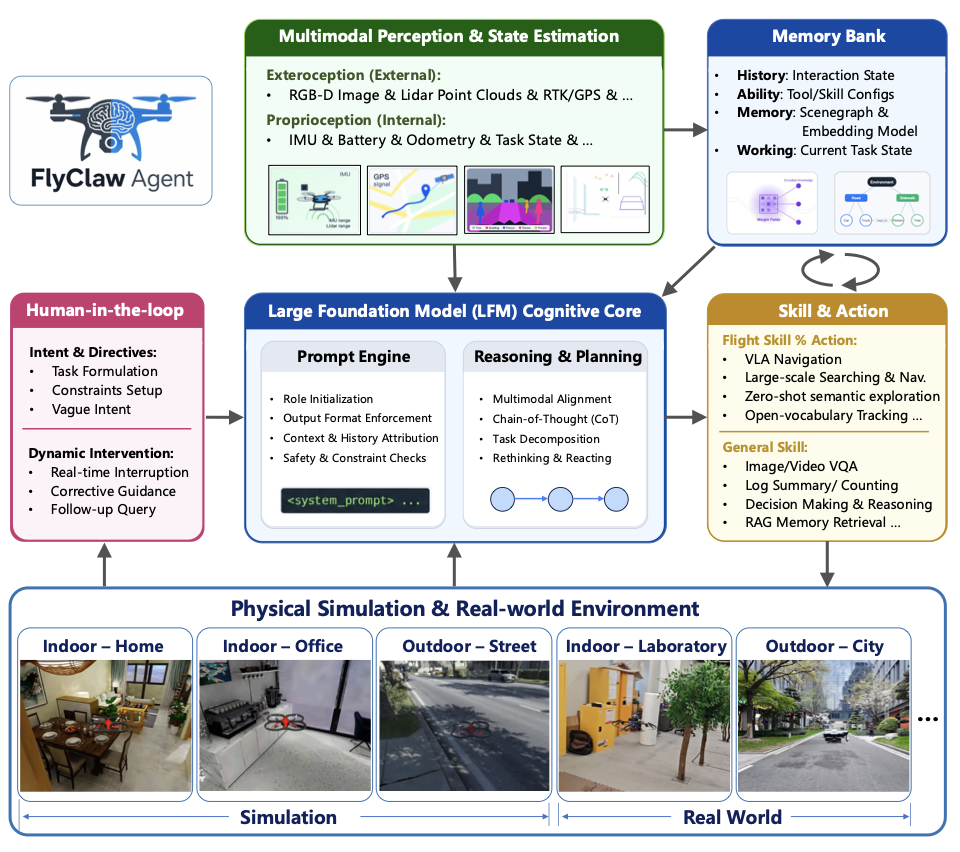
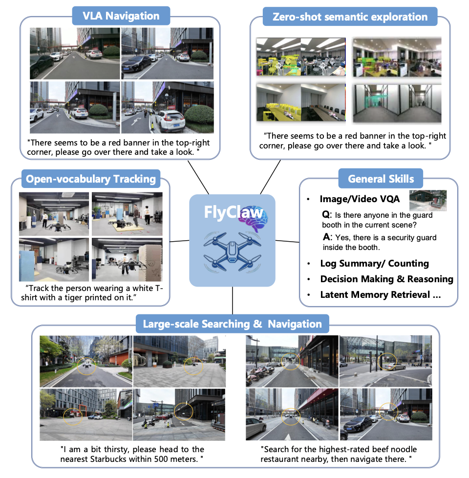

1 Zhejiang University, 2 Differential Robotics
† These authors contributed equally to this work.
* Corresponding author. E-mail: wuyuze000@zju.edu.cn (Yuze Wu),iszhouxin@zju.edu.cn (Xin Zhou)
DiffAgent turns high-level human instructions into long-horizon aerial missions — planning, reflecting, composing skills, and executing across open real-world environments in a single agent loop.
Unmanned aerial vehicles are increasingly expected to execute high-level human instructions in open real-world environments. However, existing vision-language-action, vision-language-navigation, and UAV autonomy systems are still largely limited to view-bounded, short-horizon, or pre-structured execution, making them inadequate for non-preprogrammed long-horizon aerial tasks and brittle under unexpected situations during deployment. To address this gap, we present DiffAgent, an agent-native aerial framework that unifies long-horizon mission planning, reflective task reconstruction, skill-based capability orchestration, and cloud-edge collaborative execution for real-world UAV autonomy.
DiffAgent is built on three key ideas. First, it supports long-horizon planning with online reflection and task rebuilding, enabling the agent to reassess progress, recover from interruptions, and continue missions when the original execution path becomes invalid. Second, it introduces a skill-based registration and automatic orchestration mechanism, through which heterogeneous downstream capabilities can be modularized as reusable skills and dynamically composed by the agent, making all-in-one aerial intelligence possible. Third, to overcome severe onboard compute and endurance constraints, DiffAgent adopts a cloud-edge collaborative architecture that offloads heavy perception, reasoning, and knowledge-intensive modules while preserving low-latency flight-side control.
Under this unified framework, DiffAgent integrates mapping and search, GPS and VLA fused navigation, human-UAV interaction, three-dimensional reconstruction and waypoint backtracking, reflective mission review and task logging, retrieval-augmented diagnosis and code correction, as well as video question answering with video and environment memory, into a single agent loop. DiffAgent moves UAV systems beyond view-bounded reactive execution toward a more general, scalable, and deployable embodied aerial agent paradigm.


A complete instruction-to-execution loop. The user speaks a high-level request in natural language; DiffAgent interprets the intent, decomposes it into an executable plan, and an embodied robot carries the mission out across indoor and outdoor scenes.
The user issues a high-level instruction: “I ordered a coffee at the Starbucks downstairs — could you go and pick it up for me?” The DiffAgent interface instantly understands the intent (“go to Starbucks”), retrieves the nearest store location with a map-search tool, and generates a step-by-step execution plan with confirmed steps — turning a vague request into an actionable mission before any motion starts.
With the plan confirmed, the robot departs and navigates autonomously across diverse scenes — an indoor hall, corridors, an outdoor plaza, parking areas and city streets — following planned waypoints while avoiding obstacles. This demonstrates long-horizon embodied navigation beyond view-bounded reactive control.
The robot enters the target building, climbs the stairs to the fourth floor and reaches the Starbucks pickup area, closing the loop of instruction → planning → execution → arrival.
A continuous end-to-end aerial mission in a real business district. A single agent loop drives the UAV through six tasks requested by the user — switching between flight skills (GPS & VLA fused navigation, mapping & search) and general skills (visual question answering, reflective planning) on the fly. The interface panel tracks task progress, steps and risk notes, while the onboard window shows the drone’s first-person view.
User request: “I’m a bit thirsty — please navigate me to the nearest Starbucks within 500 meters.” The agent retrieves the store location through map search and plans waypoints; the UAV takes off from the park road and flies across plazas, fountains and office blocks, avoiding pedestrians and delivery vehicles, until it reaches the Starbucks storefront.
User request: “Turn 90° to the right and check whether there is a security guard in the guard booth.” The agent rotates the UAV, captures the current camera view, and answers with a vision-language check — demonstrating real-time human intervention and onboard visual QA mid-mission.
User request: “Next, navigate me to the nearest beef noodle restaurant via GPS.” The agent re-plans the mission and the UAV cruises along city streets past Starbucks and KFC, keeping a safe distance from vehicles, pedestrians and parked e-bikes while the interface synchronizes task progress and the onboard view.
User request: “Check whether there are any illegally parked vehicles in the current view.” The agent invokes visual QA over the drone camera to identify and localize parking violations — perception skills composed on demand during flight.
User request: “It seems there is a red banner on the right — please go and take a look.” The agent detects the target, generates a new flight plan and flies the UAV toward the banner for close observation while keeping a safe distance from obstacles — an example of reflective task rebuilding on the fly.
User request: “Also, check the current battery; if the voltage drops below 24V, return to the takeoff point automatically.” The agent appends a return-home task to the mission queue and the UAV autonomously flies back across the park to its launch point — closing the long-horizon loop with recovery and continuation.
@article{diffagent2026,
title = {DiffAgent: An Agent-Native Aerial Framework for Long-Horizon Real-World UAV Autonomy},
author = {Mo Zhu and Yuze Wu and Xiao Cui and Weiqi Gai
and Xingxing Li and Yuheng Du and Pei Li and Yicong Luo
and Zhan Su and Runyu Cai and Yihang Li and Lianjie Guo
and Xin Zhou and Fei Gao},
journal = {arXiv preprint},
year = {2026},
}
Update the venue and publication year before release.